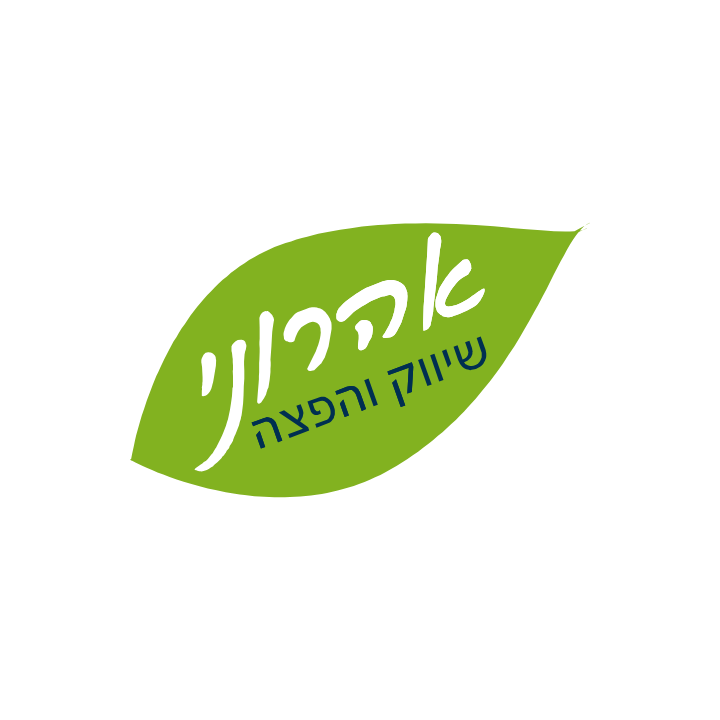
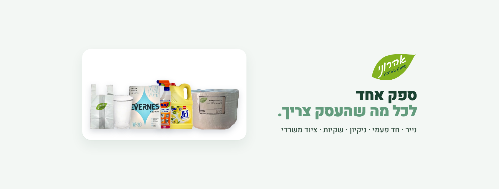
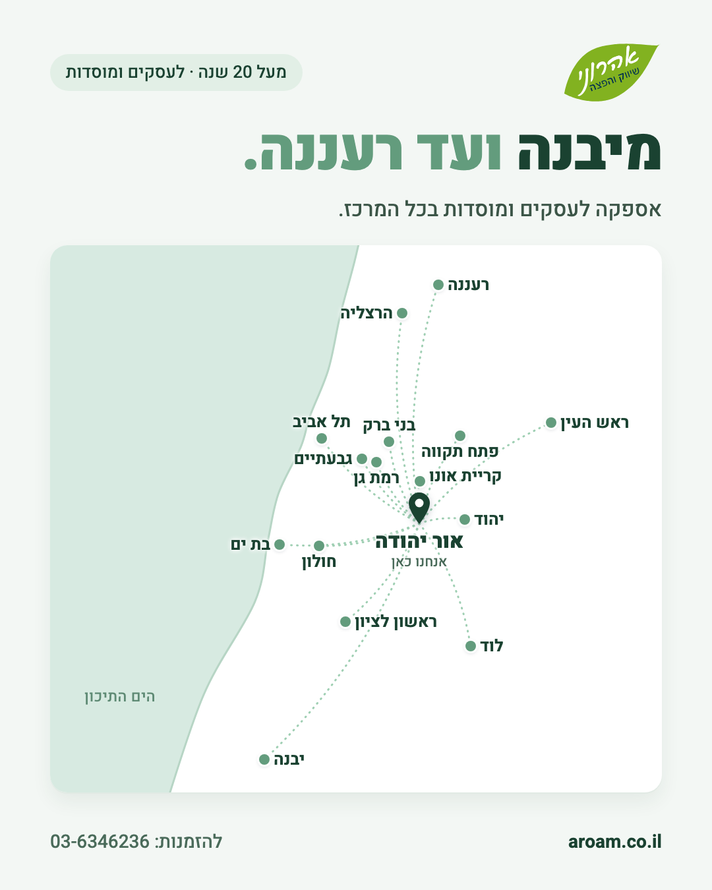
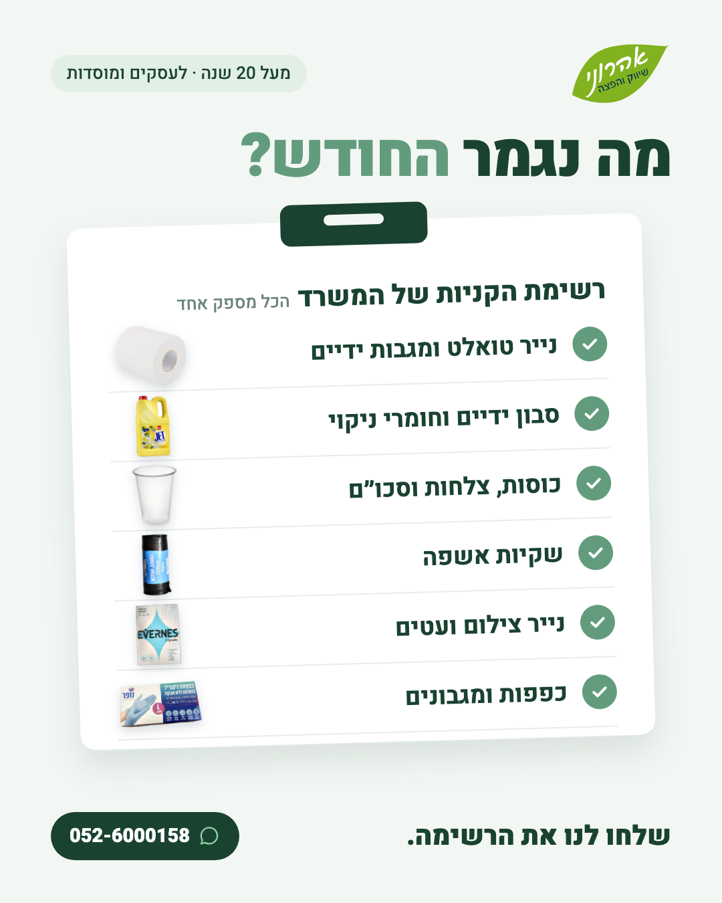
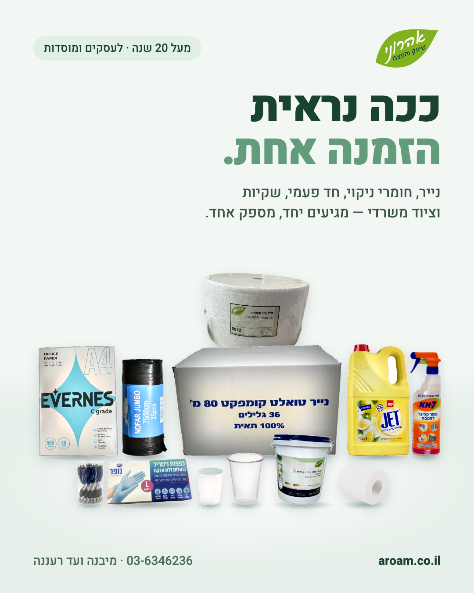
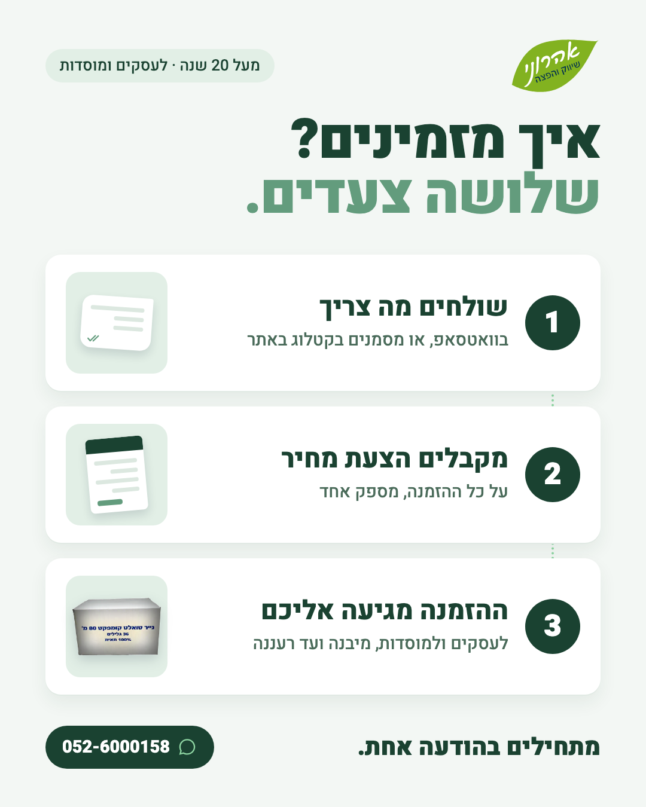

<meta charset="utf-8">
<meta name="viewport" content="width=device-width, initial-scale=1, viewport-fit=cover">
<title>מדריך קמפיין הוואטסאפ</title>
<meta name="claude:viewport-fit-sides" content="cover">
<meta name="robots" content="noindex, nofollow">
<link rel="preconnect" href="https://fonts.googleapis.com">
<link rel="preconnect" href="https://fonts.gstatic.com" crossorigin>
<link rel="stylesheet" href="https://fonts.googleapis.com/css2?family=Heebo:wght@700;800&family=Assistant:wght@400;600;700&display=swap">
<style>
/* A setup checklist read top to bottom, often on a phone: one column of numbered steps,
   each text Roei pastes in its own copy box. Brand greens from the site. */
:root {
  --bg: #F3F7F4;
  --card: #FFFFFF;
  --text: #1F2A24;
  --muted: #51625A;
  --line: #D8E5DC;
  --head: #1A4231;
  --chip: #E2EFE6;
  --code: #F0F5F2;
  --btn: #1A4231;
  --btn-text: #FFFFFF;
  --warn: #8A4E10;
  --warn-bg: #FBF1E4;
  --display: "Heebo", "Arial Hebrew", sans-serif;
  --body: "Assistant", "Arial Hebrew", -apple-system, sans-serif;
}
@media (prefers-color-scheme: dark) {
  :root:not([data-theme="light"]) {
    --bg: #0E1914; --card: #16241D; --text: #E5EEE8; --muted: #A2B5A9; --line: #29402F;
    --head: #8FD6A3; --chip: #1F3A2C; --code: #1C2E24;
    --btn: #8FD6A3; --btn-text: #0E1914; --warn: #E8B072; --warn-bg: #2C2316;
    color-scheme: dark;
  }
}
:root[data-theme="dark"] {
  --bg: #0E1914; --card: #16241D; --text: #E5EEE8; --muted: #A2B5A9; --line: #29402F;
  --head: #8FD6A3; --chip: #1F3A2C; --code: #1C2E24;
  --btn: #8FD6A3; --btn-text: #0E1914; --warn: #E8B072; --warn-bg: #2C2316;
  color-scheme: dark;
}
* { box-sizing: border-box; }
body { background: var(--bg); color: var(--text); font-family: var(--body); font-size: 17px;
  line-height: 1.6; direction: rtl; }
.wrap { max-width: 860px; margin: 0 auto; display: grid; gap: 18px;
  padding-left: max(16px, env(safe-area-inset-left, 0px));
  padding-right: max(16px, env(safe-area-inset-right, 0px));
  padding-block: 28px 64px; }
h1, h2 { font-family: var(--display); color: var(--head); text-wrap: balance; margin: 0; }
h1 { font-size: 30px; line-height: 1.2; font-weight: 800; }
h2 { font-size: 22px; line-height: 1.3; font-weight: 700; }
h3 { font-size: 18px; margin: 10px 0 0; }
p { margin: 0; }
.lead { color: var(--muted); max-width: 62ch; }
.step { background: var(--card); border: 1px solid var(--line); border-radius: 10px; padding: 20px;
  display: grid; gap: 12px; min-width: 0; }
.num { justify-self: start; background: var(--chip); color: var(--head); font-weight: 700;
  font-size: 14px; letter-spacing: .02em; border-radius: 20px; padding: 2px 12px; }
ol, ul { margin: 0; padding-inline-start: 22px; display: grid; gap: 6px; }
code { background: var(--code); border-radius: 4px; padding: 1px 6px; font-size: 15px;
  direction: ltr; unicode-bidi: isolate; }
.copy { border: 1px solid var(--line); border-radius: 8px; background: var(--code); min-width: 0; }
.copy-head { display: flex; justify-content: space-between; align-items: center; gap: 8px;
  padding: 8px 12px; border-bottom: 1px solid var(--line); }
.copy-label { font-weight: 700; font-size: 14px; color: var(--muted); }
.copy-btn { font: inherit; font-size: 14px; font-weight: 700; color: var(--btn-text); background: var(--btn);
  border: 0; border-radius: 6px; padding: 6px 14px; min-height: 36px; cursor: pointer; }
.copy-btn:focus-visible { outline: 3px solid var(--head); outline-offset: 2px; }
.copy-text { margin: 0; padding: 12px; white-space: pre-wrap; overflow-wrap: anywhere;
  font-family: var(--body); font-size: 16px; }
.table-wrap { overflow-x: auto; }
table { width: 100%; border-collapse: collapse; font-size: 15px; }
th, td { text-align: start; padding: 8px; border-bottom: 1px solid var(--line); vertical-align: top; }
th { color: var(--muted); font-weight: 700; }
td:first-child { white-space: nowrap; font-variant-numeric: tabular-nums; }
.imgs { display: grid; grid-template-columns: repeat(2, minmax(0, 1fr)); gap: 10px; }
.imgs figure { margin: 0; display: grid; gap: 4px; align-self: start; }
.imgs img { width: 100%; max-width: 100%; height: auto; display: block; border-radius: 6px;
  border: 1px solid var(--line); }
.imgs figcaption { font-size: 14px; color: var(--muted); }
.note { background: var(--chip); border-radius: 8px; padding: 10px 14px; }
.warn { background: var(--warn-bg); color: var(--text); border-radius: 8px; padding: 10px 14px; }
.warn b { color: var(--warn); }
.check { list-style: none; padding-inline-start: 0; }
.check li { display: grid; grid-template-columns: 18px 1fr; gap: 10px; align-items: start; }
.check li::before { content: ""; width: 14px; height: 14px; margin-top: 6px; border: 2px solid var(--head);
  border-radius: 3px; }
@media (max-width: 560px) {
  h1 { font-size: 25px; }
  .step { padding: 16px; }
}
@media (prefers-reduced-motion: no-preference) {
  .copy-btn { transition: background-color .15s; }
}
</style>

<main class="wrap" dir="rtl" lang="he">

<header class="step" style="background:transparent;border:0;padding:0">
  <h1>מדריך הקמה: קמפיין וואטסאפ בפייסבוק</h1>
  <p class="lead">כל השלבים לפי הסדר. ליד כל טקסט שמדביקים יש כפתור העתקה. התמונות לדף נמצאות במחשב בתיקייה <code>marketing/meta/img</code>, והמודעות בתיקייה <code>marketing/meta/final_v2</code>.</p>
  <div class="table-wrap"><table>
    <tr><th>ימים</th><th>מה עושים</th></tr>
    <tr><td><span dir="ltr">1–3</span></td><td>שלב 1 (וואטסאפ ביזנס) ושלב 2 (דף עסקי)</td></tr>
    <tr><td><span dir="ltr">3–5</span></td><td>שלב 3 (חיבור הוואטסאפ), פרסום 4 הפוסטים, שלב 4 (חשבון מודעות ואימות העסק)</td></tr>
    <tr><td><span dir="ltr">5–7</span></td><td>שלב 5 (הקמת הקמפיין) ושלב 6 (בדיקה), ואז הפעלה</td></tr>
    <tr><td><span dir="ltr">7–21</span></td><td>שלב 7: 14 ימי ריצה וספירה שבועית</td></tr>
  </table></div>
</header>

<section class="step" id="whatsapp">
  <span class="num">שלב 1 · בטלפון</span>
  <h2>WhatsApp Business</h2>
  <ol>
    <li>להוריד את WhatsApp Business מחנות האפליקציות.</li>
    <li>להיכנס עם אותו מספר, 052-6000158. כשהאפליקציה מציעה להעביר את השיחות מהוואטסאפ הרגיל, לאשר.</li>
    <li>פרופיל עסקי (הגדרות ← כלים לעסקים ← פרופיל עסקי): שם <b>אהרוני שיווק והפצה</b> · קטגוריה: הקרובה ביותר לסיטונאות או אספקה לעסקים · כתובת היצירה 16, אור יהודה · שעות א׳–ה׳ <span dir="ltr">08:00–18:00</span> · מייל meiraroam@gmail.com · אתר https://aroam.co.il · תמונת פרופיל <code>profile.png</code> (מוצגת בשלב 2).</li>
  </ol>
  <div class="copy"><div class="copy-head"><span class="copy-label">תיאור העסק</span><button type="button" class="copy-btn" id="copy-wa-desc">העתקה</button></div>
<pre class="copy-text">ספק סיטונאי לעסקים ומוסדות במרכז: חד פעמי ואריזות, מוצרי נייר, חומרי ניקוי, שקיות וציוד משרדי. מעל 20 שנה. אספקה מיבנה ועד רעננה.</pre></div>

  <h3>הודעת פתיחה והודעת היעדרות: לא להפעיל באפליקציה</h3>
  <p>שתיהן נשלחות אוטומטית לכל מי שכותב למספר, ולא רק למי שהגיע מהמודעה. הודעת הפתיחה של האפליקציה נשלחת אפילו כשאתה כותב ראשון למספר חדש. את הודעת הפתיחה שמים במקום זה בתבנית ההודעה של המודעה (שלב 5), ואותה רואה רק מי שלחץ על המודעה.</p>
  <p class="note">אם בכל זאת רוצים הודעת היעדרות: כלים לעסקים ← הודעת היעדרות ← תזמון: מחוץ לשעות הפעילות, ונמענים: מי שלא שמור באנשי הקשר, כדי שלקוחות קבועים לא יקבלו אותה.</p>
  <div class="copy"><div class="copy-head"><span class="copy-label">הודעת היעדרות (רק אם מפעילים)</span><button type="button" class="copy-btn" id="copy-wa-away">העתקה</button></div>
<pre class="copy-text">שלום, קיבלנו את ההודעה ונחזור אליכם בשעות הפעילות.</pre></div>

  <h3>תשובות מהירות</h3>
  <p>כלים לעסקים ← תשובות מהירות ← הוספה. הקיצור הוא מה שמקלידים בשיחה כדי לשלוף את התשובה.</p>
  <div class="copy"><div class="copy-head"><span class="copy-label">קיצור /פרטים</span><button type="button" class="copy-btn" id="copy-qr-details">העתקה</button></div>
<pre class="copy-text">כדי שנכין הצעה מדויקת: שם העסק, העיר, ומה אתם מזמינים בדרך כלל — אפשר פשוט צילום של ההזמנה האחרונה.</pre></div>
  <div class="copy"><div class="copy-head"><span class="copy-label">קיצור /אזור</span><button type="button" class="copy-btn" id="copy-qr-area">העתקה</button></div>
<pre class="copy-text">אנחנו מספקים לעסקים מיבנה ועד רעננה, כולל גוש דן ובקעת אונו.</pre></div>
  <div class="copy"><div class="copy-head"><span class="copy-label">קיצור /קטלוג</span><button type="button" class="copy-btn" id="copy-qr-catalog">העתקה</button></div>
<pre class="copy-text">הקטלוג המלא שלנו: https://aroam.co.il/catalog/?utm_source=whatsapp&amp;utm_medium=chat&amp;utm_campaign=meta — אפשר לסמן מוצרים ולשלוח לנו את ההזמנה ישר לוואטסאפ.</pre></div>
  <div class="copy"><div class="copy-head"><span class="copy-label">קיצור /הצעה</span><button type="button" class="copy-btn" id="copy-qr-quote">העתקה</button></div>
<pre class="copy-text">מצורפת הצעת המחיר. אם יש שאלה על מוצר או כמות — כתבו לנו כאן.</pre></div>

  <h3>תוויות</h3>
  <p>ליצור ארבע תוויות: <b>פייסבוק</b> · <b>לא עסקי</b> · <b>נשלחה הצעה</b> · <b>לקוח חדש</b>. כל שיחה שמגיעה מהמודעות מקבלת "פייסבוק", ובהמשך את התווית של השלב שהגיעה אליו.</p>
</section>

<section class="step" id="page">
  <span class="num">שלב 2 · מחשב או טלפון</span>
  <h2>דף עסקי בפייסבוק</h2>
  <ol>
    <li>מהפרופיל האישי: תפריט ← דפים ← יצירת דף חדש.</li>
    <li>שם הדף: <b>אהרוני שיווק והפצה</b>. קטגוריה: להקליד "סיטונאי" או "Wholesale" ולבחור את הקרובה ביותר.</li>
    <li>פרטי קשר: אתר https://aroam.co.il · טלפון 03-6346236 (המשרד; את הוואטסאפ, 052-6000158, מחברים בשלב 3) · מייל meiraroam@gmail.com · כתובת היצירה 16, אור יהודה · שעות א׳–ה׳ <span dir="ltr">08:00–18:00</span>.</li>
    <li>תמונת פרופיל <code>profile.png</code> ותמונת כיסוי <code>cover.png</code>:</li>
  </ol>
  <div class="imgs">
    <figure><figcaption>תמונת פרופיל</figcaption></figure>
    <figure><figcaption>תמונת כיסוי</figcaption></figure>
  </div>
  <div class="copy"><div class="copy-head"><span class="copy-label">ביו (שורת התיאור הקצרה)</span><button type="button" class="copy-btn" id="copy-page-bio">העתקה</button></div>
<pre class="copy-text">ספק סיטונאי לעסקים ומוסדות במרכז: חד פעמי, נייר, ניקיון, שקיות וציוד משרדי. מעל 20 שנה.</pre></div>

  <h3>ארבעה פוסטים ראשונים</h3>
  <p>לפרסם את כולם <b>לפני</b> שהמודעות עולות, כדי שבעל עסק שנכנס לבדוק את הדף לא ימצא דף ריק. לפי הסדר, מ-1 עד 4: הפוסט האחרון מופיע ראשון בדף, ולכן "איך מזמינים?" יוצא אחרון — מי שנכנס רואה קודם איך מתחילים.</p>
  <div class="imgs">
    <figure><figcaption>פוסט 1 · <code>post_area.png</code></figcaption></figure>
    <figure><figcaption>פוסט 2 · <code>post_checklist.png</code></figcaption></figure>
    <figure><figcaption>פוסט 3 · <code>post_order.png</code></figcaption></figure>
    <figure><figcaption>פוסט 4 · <code>post_steps.png</code></figcaption></figure>
  </div>
  <div class="copy"><div class="copy-head"><span class="copy-label">פוסט 1 · מיבנה ועד רעננה</span><button type="button" class="copy-btn" id="copy-post-1">העתקה</button></div>
<pre class="copy-text">מיבנה ועד רעננה — אספקה לעסקים ולמוסדות בכל המרכז: רעננה, הרצליה, פתח תקווה, ראש העין, בני ברק, תל אביב, רמת גן, גבעתיים, קריית אונו, אור יהודה, יהוד, חולון, בת ים, ראשון לציון, לוד ויבנה.
אהרוני שיווק והפצה, מאור יהודה — מעל 20 שנה.
להזמנות: 03-6346236 · aroam.co.il</pre></div>
  <div class="copy"><div class="copy-head"><span class="copy-label">פוסט 2 · מה נגמר החודש?</span><button type="button" class="copy-btn" id="copy-post-2">העתקה</button></div>
<pre class="copy-text">מה נגמר החודש במשרד? נייר טואלט, סבון ידיים, כוסות, שקיות אשפה, נייר צילום, כפפות…
שלחו לנו את הרשימה בוואטסאפ, ונחזור עם הצעת מחיר על הכל — מספק אחד.
https://wa.me/972526000158</pre></div>
  <div class="copy"><div class="copy-head"><span class="copy-label">פוסט 3 · ככה נראית הזמנה אחת</span><button type="button" class="copy-btn" id="copy-post-3">העתקה</button></div>
<pre class="copy-text">ככה נראית הזמנה אחת: נייר טואלט וגלילים תעשייתיים, חומרי ניקוי וכפפות, כוסות חד פעמיות, שקיות אשפה, נייר צילום ועטים — מגיעים יחד, מספק אחד.
אהרוני שיווק והפצה — מעל 20 שנה ספק לעסקים ומוסדות במרכז, מיבנה ועד רעננה.
להזמנות: 03-6346236 · הקטלוג המלא: aroam.co.il</pre></div>
  <div class="copy"><div class="copy-head"><span class="copy-label">פוסט 4 · איך מזמינים?</span><button type="button" class="copy-btn" id="copy-post-4">העתקה</button></div>
<pre class="copy-text">איך מזמינים מאיתנו? שלושה צעדים:
1. שולחים לנו בוואטסאפ מה צריך — או מסמנים מוצרים בקטלוג באתר.
2. מקבלים הצעת מחיר על כל ההזמנה, מספק אחד.
3. ההזמנה מגיעה אליכם — לעסקים ולמוסדות מיבנה ועד רעננה.
https://wa.me/972526000158 · הקטלוג: aroam.co.il</pre></div>
</section>

<section class="step" id="link">
  <span class="num">שלב 3</span>
  <h2>חיבור הוואטסאפ לדף</h2>
  <p>הגדרות הדף ← חשבונות מקושרים (Linked accounts) ← WhatsApp ← להקליד 052-6000158 ← שליחת קוד. הקוד מגיע לוואטסאפ ביזנס, ומזינים אותו.</p>
</section>

<section class="step" id="account">
  <span class="num">שלב 4 · במחשב</span>
  <h2>חשבון מודעות</h2>
  <ol>
    <li>להיכנס ל-business.facebook.com. ה-Business Manager "אהרוני שיווק והפצה" <b>כבר קיים</b>, אין לפתוח חדש.</li>
    <li>הגדרות העסק ← חשבונות ← דפים ← הוספה ← לבחור את הדף החדש.</li>
    <li>הגדרות העסק ← חשבונות ← חשבונות מודעות ← הוספה ← יצירת חשבון מודעות חדש. שם: "אהרוני — מודעות". <b>אזור זמן: ירושלים. מטבע: שקל חדש (ILS).</b></li>
    <li>אמצעי תשלום: כרטיס אשראי.</li>
    <li>אימות דו-שלבי בפרופיל האישי: הגדרות ← אבטחה וכניסה ← אימות דו-שלבי.</li>
    <li>אימות העסק: הגדרות העסק ← מרכז האבטחה ← התחלת אימות, עם תעודת עוסק מורשה 059291906.</li>
  </ol>
  <p class="warn"><b>אזור הזמן והמטבע לא ניתנים לשינוי אחר כך.</b> ואם משהו נחסם, מערערים מתוך מטא ולא פותחים חשבון נוסף. זה הלקח מגוגל.</p>
</section>

<section class="step" id="campaign">
  <span class="num">שלב 5 · Ads Manager</span>
  <h2>הקמת הקמפיין</h2>
  <p>שמות הכפתורים בממשק של מטא משתנים מדי פעם. אם משהו לא מופיע בדיוק כך, לחפש את המשמעות.</p>
  <div class="table-wrap"><table>
    <tr><th>רמה</th><th>הגדרה</th></tr>
    <tr><td>קמפיין</td><td>יעד: מעורבות (Engagement). קמפיין אחד בלבד.</td></tr>
    <tr><td>קבוצת מודעות</td><td>מיקום ההמרה: אפליקציות הודעות (Messaging apps) ← WhatsApp · יעד ביצועים: <b>מקסימום לידים (Maximize number of leads)</b>. אם האפשרות לא מופיעה: מקסימום שיחות (Maximize number of conversations)</td></tr>
    <tr><td></td><td>תקציב יומי ₪30 · 14 ימים (בערך ₪420) · רץ כל הזמן, בלי תזמון שעות</td></tr>
    <tr><td></td><td>מיקום: <b>סיכות על אזורי תעשייה ומשרדים</b>, רדיוס 1 ק"מ לכל אחת (הרשימה למטה) · גיל <span dir="ltr">25–65</span> · כל המגדרים · בלי תחומי עניין · בלי סינון שפה</td></tr>
    <tr><td></td><td>מיקומי הצגה: אוטומטיים (Advantage+ placements). כך המודעות מגיעות לפיד, לסטורי, לרילס ולסטטוס בוואטסאפ</td></tr>
    <tr><td>מודעה</td><td>זהות: דף הפייסבוק · תמונה אחת לכל מודעה, בשני גדלים (פיד וסטורי) · יעד: WhatsApp 052-6000158 · הודעה מוכנה לפי המודעה, למטה</td></tr>
  </table></div>

  <h3>למה סיכות ולא עיגול סביב אור יהודה</h3>
  <p>במטא אי אפשר לבחור "בעלי עסקים". המיקום הוא הדרך היחידה להגיע לעסקים: מי שנמצא באזור תעשייה בשעות העבודה כנראה עובד שם. עיגול של 20 ק"מ סביב אור יהודה תופס בעיקר שכונות מגורים, ומטא מחפשת שם את מי שהכי קל לגרום לו לשלוח הודעה, כלומר בעיקר אנשים פרטיים.</p>
  <p>בקבוצת המודעות ← מיקומים ← להקליד את השם או ללחוץ "הצבת סיכה" (Drop pin) על המקום במפה ← רדיוס 1 ק"מ. אם מטא מתריעה שהקהל קטן מדי, להגדיל ל-2 ק"מ.</p>
  <ol><li>אזור התעשייה אור יהודה</li><li>קריית אריה, פתח תקווה</li><li>רמת החייל, תל אביב</li><li>הבורסה, רמת גן</li><li>פארק אפק, ראש העין</li><li>הרצליה פיתוח</li><li>אזור התעשייה רעננה</li><li>אזור התעשייה חולון</li><li>אזור התעשייה ראשון לציון (מערב)</li><li>אזור התעשייה יבנה</li></ol>

  <h3>תבנית ההודעה (אותה ברכה לחמש המודעות)</h3>
  <p>בהגדרות המודעה ← תבנית הודעה (Message template) ← יצירה. בשדה הברכה (Greeting) מדביקים את הנוסח שלמטה, ובשדה ההודעה המוכנה (Pre-filled message) את ההודעה של אותה מודעה. הברכה מופיעה רק בשיחה שנפתחת מהמודעה.</p>
  <div class="copy"><div class="copy-head"><span class="copy-label">ברכה (Greeting)</span><button type="button" class="copy-btn" id="copy-ad-greeting">העתקה</button></div>
<pre class="copy-text">שלום, תודה שפניתם לאהרוני שיווק והפצה.
כדי שנכין הצעה מדויקת, כתבו לנו:
1. שם העסק והעיר
2. מה אתם מזמינים בדרך כלל — או פשוט צילום של ההזמנה האחרונה</pre></div>

  <h3>חמש המודעות</h3>
  <p>כל המודעות באותה קבוצת מודעות. הקבצים נמצאים במחשב בתיקייה <code>marketing/meta/final_v2</code>. לכל מודעה מעלים את שתי התמונות ובוחרים "התאמה אישית לפי מיקום" (Customize per placement): <code>_feed</code> לפיד ו-<code>_story</code> לסטורי ולרילס.</p>

  <h3>מודעה 1 · משרד של 20 עובדים בשנה</h3>
  <p class="warn"><b>לאשר לפני העלייה:</b> המספרים מחושבים מהמדריך באתר (2 גלילים לעובד בחודש, 2–3 מגבות ביום, חבילת נייר לעובד בחודשיים). אם הם לא נשמעים לך נכונים, לא להעלות את המודעה עד שנתקן.</p>
  <div class="imgs">
    <figure><figcaption>פיד 4:5 · <code>D_numbers_feed.png</code></figcaption></figure>
    <figure><figcaption>סטורי 9:16 · <code>D_numbers_story.png</code></figcaption></figure>
  </div>
  <div class="copy"><div class="copy-head"><span class="copy-label">טקסט ראשי</span><button type="button" class="copy-btn" id="copy-ad-d-text">העתקה</button></div>
<pre class="copy-text">משרד של 20 עובדים צורך בשנה בערך 480 גלילי נייר טואלט, 12,500 מגבות נייר ו-120 חבילות נייר צילום — ועוד כוסות, חומרי ניקוי ושקיות.
אצלנו כל זה מגיע בהזמנה אחת, מספק אחד.
אהרוני שיווק והפצה — מעל 20 שנה ספק לעסקים ומוסדות במרכז. שלחו הודעה ונחזור עם הצעת מחיר.</pre></div>
  <div class="copy"><div class="copy-head"><span class="copy-label">כותרת מתחת לתמונה</span><button type="button" class="copy-btn" id="copy-ad-d-headline">העתקה</button></div>
<pre class="copy-text">כמה המשרד שלכם צורך בשנה?</pre></div>
  <div class="copy"><div class="copy-head"><span class="copy-label">הודעה מוכנה ללקוח</span><button type="button" class="copy-btn" id="copy-ad-d-prefill">העתקה</button></div>
<pre class="copy-text">שלום, אשמח להצעת מחיר לציוד למשרד.</pre></div>

  <h3>מודעה 2 · 5 ספקים או אחד</h3>
  <div class="imgs">
    <figure><figcaption>פיד 4:5 · <code>E_contacts_feed.png</code></figcaption></figure>
    <figure><figcaption>סטורי 9:16 · <code>E_contacts_story.png</code></figcaption></figure>
  </div>
  <div class="copy"><div class="copy-head"><span class="copy-label">טקסט ראשי</span><button type="button" class="copy-btn" id="copy-ad-e-text">העתקה</button></div>
<pre class="copy-text">ספק לנייר, ספק לניקיון, ספק לחד פעמי, ספק לשקיות וספק לציוד משרדי?
אפשר להזמין את כולם מספק אחד: נייר וטואלט, חומרי ניקוי, חד פעמי, שקיות וציוד משרדי — בהזמנה אחת.
אהרוני שיווק והפצה, מעל 20 שנה מול עסקים ומוסדות במרכז. שלחו הודעה ונחזור עם הצעת מחיר.</pre></div>
  <div class="copy"><div class="copy-head"><span class="copy-label">כותרת מתחת לתמונה</span><button type="button" class="copy-btn" id="copy-ad-e-headline">העתקה</button></div>
<pre class="copy-text">ספק אחד במקום חמישה</pre></div>
  <div class="copy"><div class="copy-head"><span class="copy-label">הודעה מוכנה ללקוח</span><button type="button" class="copy-btn" id="copy-ad-e-prefill">העתקה</button></div>
<pre class="copy-text">שלום, אשמח להצעת מחיר לכל הציוד של העסק.</pre></div>

  <h3>מודעה 3 · ממש לידכם</h3>
  <div class="imgs">
    <figure><figcaption>פיד 4:5 · <code>F_map_feed.png</code></figcaption></figure>
    <figure><figcaption>סטורי 9:16 · <code>F_map_story.png</code></figcaption></figure>
  </div>
  <div class="copy"><div class="copy-head"><span class="copy-label">טקסט ראשי</span><button type="button" class="copy-btn" id="copy-ad-f-text">העתקה</button></div>
<pre class="copy-text">אנחנו באור יהודה, באמצע גוש דן, ומספקים לעסקים ולמוסדות באזורי התעשייה והמשרדים במרכז — מהרצליה פיתוח ורעננה, דרך רמת החייל, קריית אריה ופארק אפק, ועד חולון, ראשון לציון ויבנה.
נייר, חומרי ניקוי, חד פעמי, שקיות וציוד משרדי — מספק אחד. שלחו הודעה ונחזור עם הצעת מחיר.</pre></div>
  <div class="copy"><div class="copy-head"><span class="copy-label">כותרת מתחת לתמונה</span><button type="button" class="copy-btn" id="copy-ad-f-headline">העתקה</button></div>
<pre class="copy-text">ספק לעסקים — ממש לידכם</pre></div>
  <div class="copy"><div class="copy-head"><span class="copy-label">הודעה מוכנה ללקוח</span><button type="button" class="copy-btn" id="copy-ad-f-prefill">העתקה</button></div>
<pre class="copy-text">שלום, אשמח להצעת מחיר. העסק שלנו נמצא ב-</pre></div>

  <h3>מודעה 4 · חדר השירותים של העסק</h3>
  <div class="imgs">
    <figure><figcaption>פיד 4:5 · <code>A_restroom_feed.png</code></figcaption></figure>
    <figure><figcaption>סטורי 9:16 · <code>A_restroom_story.png</code></figcaption></figure>
  </div>
  <div class="copy"><div class="copy-head"><span class="copy-label">טקסט ראשי</span><button type="button" class="copy-btn" id="copy-ad-a-text">העתקה</button></div>
<pre class="copy-text">מתקני נייר וסבון, נייר טואלט ומגבות, סבון ידיים וחומרי ניקוי — כל מה שחדר השירותים של העסק צריך, מספק אחד.
גם המתקנים, וגם מה שממלא אותם. שלחו הודעה ונחזור עם הצעת מחיר.</pre></div>
  <div class="copy"><div class="copy-head"><span class="copy-label">כותרת מתחת לתמונה</span><button type="button" class="copy-btn" id="copy-ad-a-headline">העתקה</button></div>
<pre class="copy-text">כל מה שחדר השירותים צריך</pre></div>
  <div class="copy"><div class="copy-head"><span class="copy-label">הודעה מוכנה ללקוח</span><button type="button" class="copy-btn" id="copy-ad-a-prefill">העתקה</button></div>
<pre class="copy-text">שלום, אשמח להצעת מחיר למתקנים ולמוצרים לשירותים.</pre></div>

  <h3>מודעה 5 · נגמר הנייר. שוב.</h3>
  <p class="warn"><b>לאשר לפני העלייה:</b> "רשימה קבועה לחודש" היא הצעה חדשה. להעלות את המודעה רק אם אתה רוצה לתת אותה ללקוחות.</p>
  <div class="imgs">
    <figure><figcaption>פיד 4:5 · <code>B_empty_roll_feed.png</code></figcaption></figure>
    <figure><figcaption>סטורי 9:16 · <code>B_empty_roll_story.png</code></figcaption></figure>
  </div>
  <div class="copy"><div class="copy-head"><span class="copy-label">טקסט ראשי</span><button type="button" class="copy-btn" id="copy-ad-b-text">העתקה</button></div>
<pre class="copy-text">נגמר הנייר באמצע השבוע?
מרכיבים איתכם פעם אחת רשימה של מה שהעסק צורך, וכל חודש רק מאשרים בהודעה. נייר, חומרי ניקוי, חד פעמי ושקיות — מספק אחד.
שלחו הודעה ונתחיל.</pre></div>
  <div class="copy"><div class="copy-head"><span class="copy-label">כותרת מתחת לתמונה</span><button type="button" class="copy-btn" id="copy-ad-b-headline">העתקה</button></div>
<pre class="copy-text">רשימה קבועה לחודש</pre></div>
  <div class="copy"><div class="copy-head"><span class="copy-label">הודעה מוכנה ללקוח</span><button type="button" class="copy-btn" id="copy-ad-b-prefill">העתקה</button></div>
<pre class="copy-text">שלום, אשמח לבנות רשימת הזמנה קבועה לעסק.</pre></div>
</section>

<section class="step" id="test">
  <span class="num">שלב 6</span>
  <h2>בדיקה לפני עלייה</h2>
  <p>לפתוח כל מודעה בתצוגה המקדימה, ללחוץ עליה, ולוודא:</p>
  <ul class="check">
    <li>בפיד מופיעה התמונה המרובעת יותר (<code>_feed</code>), ובסטורי התמונה הגבוהה (<code>_story</code>).</li>
    <li>הוואטסאפ נפתח עם ההודעה המוכנה של אותה מודעה.</li>
    <li>הברכה מתבנית ההודעה מופיעה בשיחה שנפתחת מהמודעה.</li>
    <li>הודעה רגילה למספר, מטלפון אחר ולא דרך המודעה, <b>לא מקבלת שום תשובה אוטומטית</b>.</li>
    <li>אפשר לסמן את השיחה בתווית "פייסבוק".</li>
  </ul>
</section>

<section class="step" id="measure">
  <span class="num">שלב 7 · 14 ימים</span>
  <h2>מדידה ושערי החלטה</h2>
  <p>כל שיחה שמגיעה מהמודעות מסמנים בתווית "פייסבוק", ואחר כך "לא עסקי", "נשלחה הצעה" או "לקוח חדש". פעם בשבוע (10 דקות) סופרים לפי התוויות.</p>
  <p>לא משנים תקציב או הגדרות באמצע. כל שינוי מחזיר את מטא לשלב הלמידה, ושינויים תכופים בחשבון חדש מגדילים את הסיכוי לחסימה.</p>
  <div class="table-wrap"><table>
    <tr><th>מתי</th><th>מה בודקים</th><th>מה עושים</th></tr>
    <tr><td>יום 3</td><td>אין אף שיחה</td><td>בודקים את ההגדרות (חיבור הוואטסאפ, אישור המודעות, הסיכות), לא את המודעות</td></tr>
    <tr><td>יום 7</td><td>מודעה שמביאה בעיקר פניות לא עסקיות</td><td>עוצרים אותה</td></tr>
    <tr><td>יום 14 (₪420)</td><td>לפחות לקוח חדש אחד, או לפחות 3 הצעות שנשלחו לעסקים רלוונטיים</td><td>ממשיכים עוד 14 יום עם המודעות שהביאו שיחות עסקיות, ועוצרים את השאר</td></tr>
    <tr><td>יום 14</td><td>אף לקוח ופחות מ-3 הצעות</td><td>בודקים איפה זה נתקע: מעט שיחות עסקיות ← המודעות או הסיכות · שיחות בלי הצעות ← הסינון · הצעות בלי הזמנות ← המחיר</td></tr>
  </table></div>
</section>

</main>

<script>
// Copy each box's text. Some app views refuse the clipboard; then the text is selected
// so it can be copied by hand, and the button says so.
document.addEventListener('click', async (e) => {
  const btn = e.target.closest('.copy-btn');
  if (!btn) return;
  const box = btn.closest('.copy').querySelector('.copy-text');
  const text = box.innerText.trim();
  let label = 'הועתק';
  try {
    await navigator.clipboard.writeText(text);
  } catch (err) {
    const range = document.createRange();
    range.selectNodeContents(box);
    const sel = window.getSelection();
    sel.removeAllRanges();
    sel.addRange(range);
    label = 'סומן, להעתיק ידנית';
  }
  btn.textContent = label;
  setTimeout(() => { btn.textContent = 'העתקה'; }, 1800);
});
</script>
